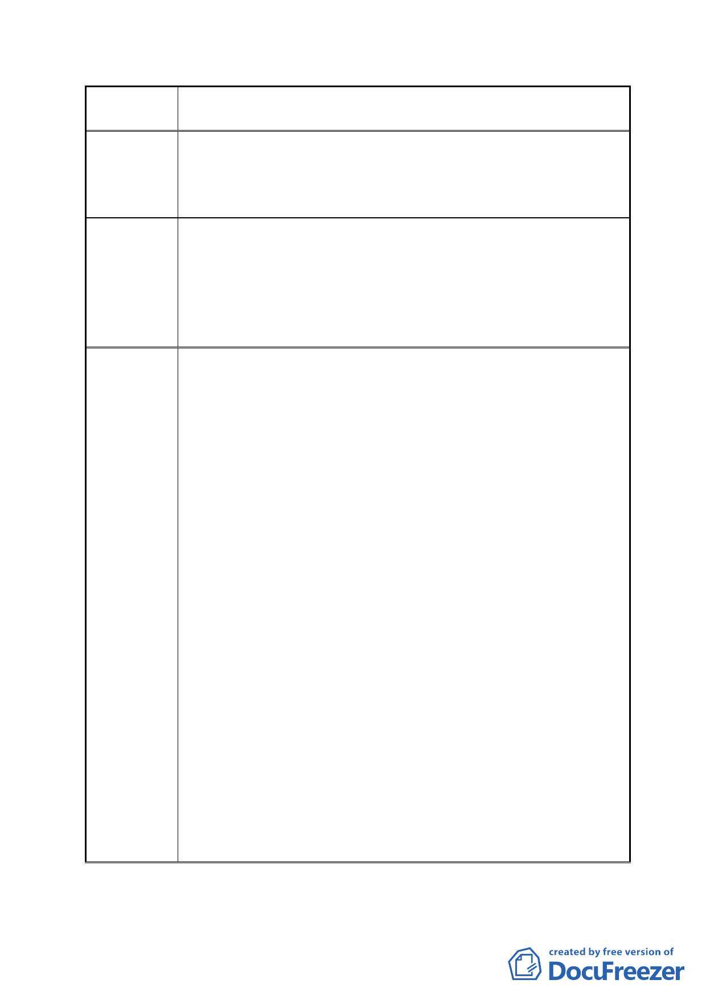

案 名 擬定臺北市南港區鐵路地下化沿線土地細部計畫案
建議辦法
市府回應
說明
率到 800％。
本公司為一營運中的生產公司，原本反對市地重劃，但臺北
市政府將其納入重劃，所以我們也順應政府政策，更希望有
較好的土地回饋、建蔽率及容積率。
我們希望：
土地回饋→不超過 30％。
建蔽率→55％。
容積率→300％。
獎勵項目 2.規模獎勵採全街廓開發或申請合併建築面積大於
4000 平方公尺以上者，給予基準容積 15％獎勵。
1.市地重劃須具備財務可行性，且參照本府過往辦理市地重
劃之經驗，本案市地重劃負擔恐無法低於 30%。
2.查本案細部計畫書業明訂特定商業區（二）之建蔽率為 55%
為原則，且經本市都市設計及土地使用開發許可審議委員
會審議同意後得予以放寬，但最高不得超過 65%。至於容
積率之部分，本計畫基於全市公平一致性考量，爰參照本
市其他工業區變更案例推算本計畫變更後之容積率，因陳
情地點原為第 2 種工業區（200%），依據本府 94 年公告「變
更『修訂臺北市主要計畫商業區（通盤檢討）計畫案』內
有關商業區變更回饋相關規定案」規定，工業區變更為第 3
種商業區（本案變更後為特商（C），使用組別比照商 3）
者須回饋 30%之土地，本案扣除應回饋之土地後，將剩餘
之容積（140%）除以市地重劃發還之土地比例後（重劃負
擔最高為 45%，故發還土地比例以 55%計算），據此推算特
定商業區（C）之容積率約為 255%。惟其容積率已優於本
市其他第 2 種工業區變更案例（如南港輪胎變更後基準容
積率僅為 235%）。
3.考量本府公展細部計畫原規定「採全街廓開發或申請合併
建築土地面積大於 8,000 平方公尺以上者，給予基準容積
15%獎勵」，對於小地主而言，確實門檻較高，另基於內政
部都委會對容積獎勵仍認為有太過寬鬆之疑慮，故本案擬
將整合開發獎勵調整如下：
建築基地採全街廓開發或 5,000 平方公尺以上者，給予基
準容積 10%之容積獎勵。
- 21 -